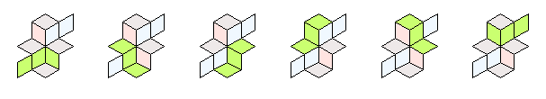
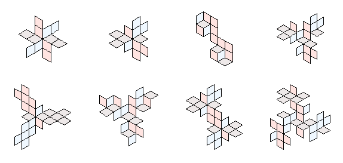
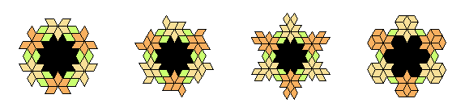

Site menu:
Tredoku tilings
Tredoku tilings were introduced by my friend and former colleague Donald Preece, who died in 2014. You can read about Donald's life and work here.
Tredoku tilings, were inspired by the tredoku puzzles that Donald encountered in the Times newspaper. Tredoku is a variant of sudoku on a layout that has a 3D appearance. It was invented by Eyal Amitzur and marketed by Mindome Ltd, who produced several books of puzzles that are mostly still in print.
The cover of one of these books is shown opposite, with an example of a tredoku puzzle. Donald was interested in the structure that remains when we remove the numbers and the 3x3 grids, as shown in the example opposite, and called this a tredoku tiling.
An important property of a tredoku tiling is that every tile lies in either one or two runs of length 3. A run consists of a central tile that has tiles attached to two of its opposite edges. The tiling on the right has six runs as highlighted below:  Here are a few more tredoku tilings that Donald discovered: 
When do tilings exist?
Donald was interested in identifying the combinations of number of tiles (τ) and number of runs (ρ) for which tilings exist. He proved that a necessary condition is and showed how to construct tredoku tilings for most combinations within this range. He conjectured that tilings do not exist for the remaining combinations.
In 2024, Simon Blackburn gave a proof of Donald's conjecture [Ref 1]. The proof is quite intricate, the most difficult part being to show that no tredoku tiling exists with 12 tiles and 8 runs.
My contribution
I inherited Donald's work in this area, which consisted largely of hand drawn pictures of tilings. I have eventually produced an archive of all of his tredoku tilings, along with what he called quadridoku and quindoku tilings (these are similar to tredoku tilings, but with runs of length 4 and 5 respectively).
These archives appear as appendices of [Ref 2], which explains the notation and annotations used. The paper gives an overview of Donald's work, but also includes some new work, including alternative proofs of parts of Donald's conjecture, a computer enumeration of the isomorphism classes of tredoku tilings with up to 16 tiles and an introduction to tilings with holes.
Donald didn't do any systematic investigation of tilings with holes, but he did give a few nice examples (see Fig 9.9 in [Ref 2] for an explanation of the colour scheme): 
References
[1] Blackburn, S.R. (2024) Tredoku Patterns. arXiv 2407.10752v3, 6 December 2024. [pdf]
[2] Ridout, M.S. (2025) Professor Preece's Tredoku tilings. arXiv ????.?????, ? October 2025. [pdf]